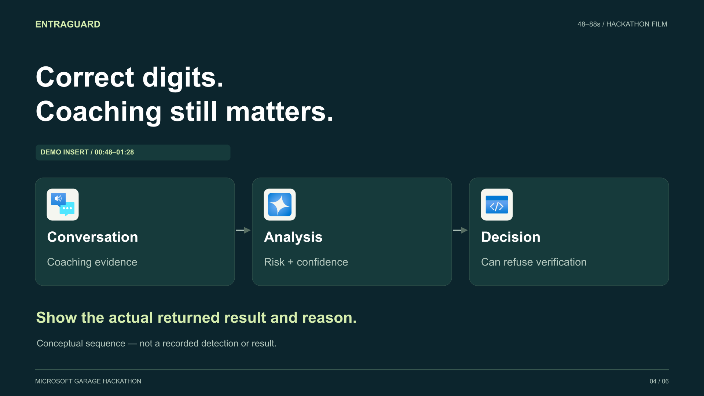

ENTRAGUARD / HACKATHON VIDEO
The right code is not the whole story.
A 1 minute 55 second storyboard with a short opening, 70 seconds reserved for real demonstration, a simple Azure architecture explanation and a closing title.
Storyboard preview — not the final submission. Synthetic narration is included. Replace the normal-verification and coaching-test slates with the actual recorded flow and outcome.
Captions are burned into this review export. Verified: 115 seconds · 1920×1080 · 30 fps · H.264/AAC. Quiet gaps are reserved for original call audio.
Voiceover review
Local synthetic English narration (Daniel). This track contains the full 115-second timeline, including gaps for demo audio. It does not simulate a caller or fabricate detection evidence.
Six-scene storyboard

00:48–01:28 · Replace with controlled coaching test
Next: send the original demo footage
Landscape MP4 or MOV, ideally 1080p or higher, including call/system audio. Send a normal verification and a controlled coaching test with the actual result and reason. Long, unedited recordings are fine. Include any mandatory judging requirements or team credits.
Production kit notes · Video checks · Presentation checks · Official asset credits